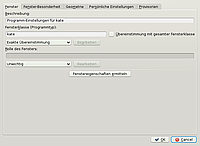
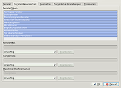
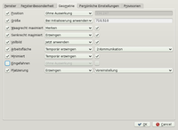
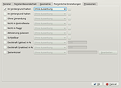
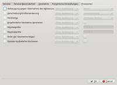

Fensterregeln
Dieser Artikel wurde für die folgenden Ubuntu-Versionen getestet:
Ubuntu 16.04 Xenial Xerus
Ubuntu 14.04 Trusty Tahr
Artikel für fortgeschrittene Anwender
Dieser Artikel erfordert mehr Erfahrung im Umgang mit Linux und ist daher nur für fortgeschrittene Benutzer gedacht.

KWin bietet die Möglichkeit spezifische Regeln über das Verhalten von Programmen und ihren Fenstern zu verwalten. Dafür gibt es einen umfangreichen Konfigurationsdialog. Dazu wählt man die Anwendung zu der man eine Regel anlegen möchte und öffnet das Fensteraktionen Menü ( Alt + F3 bzw. Kontextmenü der Titelleiste oder des Fensterleisteneintrages). Nun kann man über das Untermenü "Erweitert -> Spezielle Einstellungen für dieses Programm (bzw Fenster)" den Konfigurationsdialog erreichen. Durch diese Regeln ist es möglich, das System unbenutzbar zu machen. Daher ist mit Vorsicht vorzugehen.
Unterscheidung von Fenster- und Programmregeln¶
Man unterscheidet in diesem Fall zwischen Programm und Fenster. Regeln für ein "Programm" beinhaltet auch alle Unterfenster dieser Anwendung. Regeln für "Fenster" gelten nur für eben diese. Als Beispiel sei hier die Anwendung Kopete genannt. Möchte man hier beide Fenster stets auf unterschiedlichen Desktops haben, so sind für das Anwendungsfenster als solches und für den Chatdialog jeweils "Spezielle Einstellungen für dieses Fenster" zu wählen. Würde man die Einstellungen bei "Programm" machen, würden die Regeln für beide Fenster zugleich gelten. In diesem Artikel wird aber allgemein von Fensterregeln gesprochen.
Konfiguration¶
Öffnet man den Konfigurationsmodus, so ist dieser durch vier Reiter unterteilt. Vor der gewünschten Regel muss die Checkbox aktiviert werden, danach das gewünschte Verhalten gewählt werden und anschließend evtl. ein Wert, ein Desktop, oder eine weitere Checkbox eingetragen werden.
Verhalten¶
Ohne Auswirkung: Die Fenstereigenschaft wird nicht beeinflusst und das Standardverhalten wird verwendet. Dadurch werden Effekte von allgemeineren Einstellungen blockiert.
Bei Initialisierung anwenden: Die Fenstereigenschaft wird nur beim Öffnen auf den angegebenen Wert gesetzt. Weitere Änderungen bleiben ohne Auswirkung.
Merken: Der Wert der Fenstereigenschaft wird gespeichert und der jeweils letzte Wert beim nächsten Öffnen angewendet.
Erzwingen: Die Fenstereigenschaft wird immer an den angegebenen Wert angepasst.
Jetzt anwenden: Die Fenstereigenschaft wird sofort angewendet und bleibt später ohne Auswirkung (Diese Aktion wird danach wieder gelöscht).
Temporär erzwingen: Die Fenstereigenschaft wird erzwungen, bis das Fenster ausgeblendet wird. (Diese Aktion wird gelöscht nachdem das Fenster ausgeblendet/geschlossen wurde.)
Regeln¶
Fenster¶
 Durch einen Klick auf die Schaltfläche "Fenstereigenschaften ermitteln" und anschließenden Klick auf das gewünschte Fenster können die benötigten Werte automatisch ermittelt werden. Im Normalfall sind hier keine Einstellungen vom Benutzer vorzunehmen.
Beschreibung: Beschreibung des Fenster. Nur für die persönliche Dokumentation nötig.
Fensterklasse (Programmtyp): Systeminterne Beschreibung des Fensters.
Rolle des Fensters: Welche Art von Anwendung entspricht dieses Fenster. Firefox z.B. entspricht der Rolle "Browser". KDE Anwendungen haben in der Regel keinen sinnvollen Wert für die Rolle.
Fenster-Besonderheit¶

Fenster-Typen: In diesem Fenster wählt man den Typ des Fenster für den diese Regeln gelten.
Fenstertitel: Hier kann durch Filter des gewünschten Fenster dessen Titel gewählt werden.
Maschine: Festlegung auf welchem Rechner dieses Fenster "läuft". Voreinstellung ist der lokale Rechner.
Geometrie¶

Position: Angabe der Position des Fensters in Pixeln. Ausgehend von der linken, oberen Ecke.
Größe: Angabe der Größe in Pixeln. Erster Wert entspricht der Breite, zweiter Wert der Höhe.
Waagerecht maximiert: Größtmögliche horizontale Ausdehnung des Fensters.
Senkrecht maximiert: Größtmögliche vertikale Ausdehnung des Fensters.
Vollbild: Größtmögliche horizontale und vertikale Ausdehnung des Fensters.
Arbeitsfläche: Angabe des Desktops auf dem diese Anwendung laufen soll.
Minimiert: Das Fenster wird minimiert und ist nur ein Eintrag in der Fensterleiste.
Eingefahren: Das Fenster wird auf die Fensterdekoration minimiert. Auch als "Fensterheber" bekannt.
Platzierung: Vordefinierte Positionen des Fensters zur Auswahl.
Persönliche Einstellungen¶

Im Vordergrund halten: Dieses Fenster kann nicht durch andere überdeckt werden. Es "liegt" immer ganz oben.
Im Hintergrund halten: Dieses Fenster bleibt immer unter anderen Fenstern, selbst wenn es angeklickt wird.
Ohne Umrandung: Dieses Fenster besitzt keine Fensterdekoration mehr.
Nicht in Kontrollleiste: Das Fenster erhält keinen Eintrag in der Fensterleiste.
Nicht in Pager: Das Fenster wird nicht im Arbeitsflächenumschalter (engl. Pager) angezeigt.
Schließbar: Das Fenster darf geschlossen werden. Beispiel: Brenndialog bei k3b.
Deckkraft (aktive) in %: Setzt die Deckkkraft eines aktiven Fensters auf den Wert x in %.
Deckkraft (inaktive) in %: Setzt die Deckkkraft eines inaktiven Fensters auf den Wert x in %.
Tastenkürzel: Hier kann ein Tastenkürzel für dieses Fenster aktiviert werden. Damit ist es möglich, dieses nach "vorne" zu holen, damit es aktiv ist. Das entsprechende Tastenkürzel wird im Fenstertitel angezeigt.
Provisorien¶

Vorbeugung gegen Übernahme der Aktivierung: Festlegen wie schnell Fenster den Fokus bekommen soll.
Verschiebung/Größenänderung: In diesem Dialog kann gewählt werden, ob Fenster während des Verschiebens bzw der Größenänderung angezeigt werden. Ist hier Transparent gewählt, so wird ein schwarzer Rahmen beim Verschieben/Änderung der Größe statt dem eigentlichen Fenster angezeigt.
Fenstertyp: Hier kann ausgewählt werden, was für ein Typ dieses Fenster sein soll. So ist es z.B. möglich ein Fenster als Werkzeugleiste zu nutzen.
Angeforderte Geometrie ignorieren: Wurde eine bestimmte Geometrie festgelegt, so kann diese über diese Option ignoriert werden.
Minimalgröße: Dialog um die kleinstmögliche Größe des Fenster festzulegen. Angabe der Größe in Pixeln. Erster Wert entspricht der Breite, zweiter Wert der Höhe.
Maximalgröße: Dialog um die größtmögliche Größe des Fenster festzulegen. Angabe der Größe in Pixeln. Erster Wert entspricht der Breite, zweiter Wert der Höhe.
Strikt der Geometrie folgen: Gewählte Geometrie soll wird unter allen Umständen angewendet.
Globale Kurzbefehle blockieren: Wird diese Option gewählt und das Fenster ist aktiv, so werden die globalen Kurzbefehle blockiert.
Beispiel¶
Möchte sich zum Beispiel die Anwendung Firefox stets im Vollbild und soll sie sich dauerhaft auf Arbeitsfläche 3 befinden, so geht man wie folgt vor:
Man öffnet Firefox und öffnet das Fensteraktionen "Menü ( Alt + F3 bzw. das Kontextmenü der Titelleiste oder des Fensterleisteneintrages)". Nun kann man über das Untermenü "Erweitert -> Spezielle Einstellungen für dieses Programm (bzw Fenster)" den Konfigurationsdialog erreichen.
Nun öffnet man den Reiter "Geometrie". In diesem setzt man zuerst einen Haken bei "Vollbild", wählt im Auswahlmenü "erzwingen" und in der letzten Checkbox ebenfalls einen Haken. Als zweites setzt man einen Haken bei "Arbeitsfläche", wählt im Auswahlmenü ebenfalls "erzwingen" aus und legt im letzten Auswahlmenü die gewünschte Arbeitsfläche, in diesem Falle 3, fest. Durch einen Klick auf "Anwenden" werden die Einstellungen übernommen.
- Erstellt mit Inyoka
-
 2004 – 2017 ubuntuusers.de • Einige Rechte vorbehalten
2004 – 2017 ubuntuusers.de • Einige Rechte vorbehalten
Lizenz • Kontakt • Datenschutz • Impressum • Serverstatus -
Serverhousing gespendet von